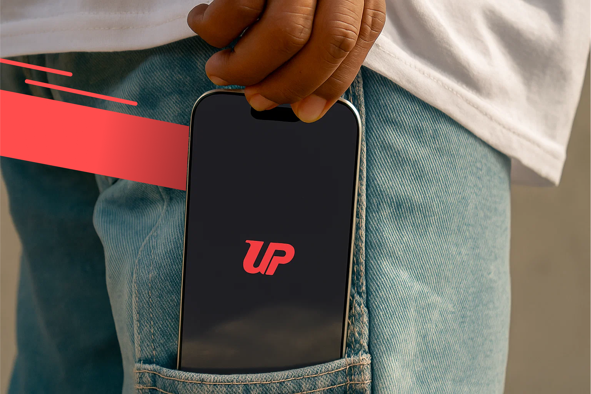

-
Timeline
2025.06 ~ 2025.08
-
UIUX Design
TAKE UP

2025.06 ~ 2025.08
TAKE UP

당신의 리듬에 맞춘 커피, 매일 가장 먼저 마주하는 익숙한 앱을 통해
한 잔을 더 쉽게, 더 나답게 선택하세요.
단순 소비에서 루틴과 취향의 시대로

매일 마주하는 커피 주문 과정. 그 속엔 "익숙한 불편함"과 "제한된 선택지"가 숨어 있습니다.
피로가 쌓이는 UX, 단절된 브랜드 경험, 우리는 그 반복적인 불편함 속에 사용자의 진짜 니즈를 발견합니다.

국내 주요 커피 브랜드들은 각각의 앱을 통해 서비스를 제공하고 있지만,
실제 사용자 경험에서는 공통된 불편함이 반복되고 있습니다
스타벅스, 투썸플레이스, 컴포즈 등 대형 브랜드 앱 모두 복잡한 주문 인터페이스,
메뉴 탐색의 비효율성, 부족한 개인화 기능 등으로 인해 사용자가 원하는 정보를 빠르게 찾기
어렵고, 원하는 방식으로 주문하기까지 여러 단계를 거쳐야 하는 번거로움이 존재합니다.
결국 많은 앱이 있음에도 불구하고 불편이 지속되는 이유는, 기능의 다양성보다
사용자 중심 설계와 경험 흐름에 대한 고려가 부족하기 때문입니다.

페르소나 기반 분석 결과, UI 복잡함과 쿠폰 사용 어려움이 주요 불편요소


구글플레이·앱스토어 리뷰에서 조사한 결과 주문 실패와 서비스 이탈이 반복되며 복잡한 UI, 결제오류, 위치 오차, 느린 속도 등
다양한 요소로 인해 사용자 불편이 누적되고 있습니다.
 문제점 1
문제점 1
UI가 직관적이지 않고 앱이 느리거나
멈추는 등 전반적인 사용 경험에 불편함
문제점 2
쿠폰 등록·사용이 어렵고 결제창 오류로
주문이 정상적으로 완료되지 않음
문제점 3
긴 대기 시간 실시간 대기 인원 미표시
부정확한 매장 위치 등 정보 제공 부정확
 .
.


유저 테스트에서 반복적으로 나타난 탐색 불편 요소를 바탕으로 메뉴 구조와 추천 화면을 재구성했습니다.
원하는 기능에 빠르게 접근하기 어렵고, 주요 정보가 동일한 위치에 몰려 있어 우선순위가 불명확하며,
스탬프 적립 및 사용 현황이 직관적으로 보이지 않아 현재 상태 파악이 어렵고 혼란을 유발한다.
사용자가 주요 메뉴에 빠르게 접근할 수 있도록 복잡한 구조를 통합해 계층 구조를 단순화하여
핵심 기능 위주로 개선하고 스탬프 정보를 한 화면에 통합·시각화하여 직관적 구조로 구성했습니다.
이용자 위치 기반 매장 탐색이 가능하지만, 지도와 리스트 화면 간 연결이 분리되어 흐름이 단절되고,
혼잡도·대기 시간 등의 실시간 정보 접근이 어렵고 분산된 구조로 인해 정보 탐색에 불편함이 있었습니다.
지도와 리스트를 유기적으로 연결하여 위치 기반 매장 탐색 흐름을 자연스럽게 유도하고,
혼잡도 및 대기 시간 등 실시간 정보를 직관적으로 통합해 매장 선택 과정에서의 효율성과 명확성을 높였습니다.
브랜드 및 상품 탐색 구조가 비효율적이고 정보와 필터링 기능이 부족해 탐색 시간이 길어지며,
유사 브랜드 비교와 결제 유도 요소도 부족해 이탈과 전환 저해로 이어진다.
브랜드 간 전환을 직관적으로 통일하고 콘텐츠 강조로 아이덴티티를
강화했으며 명확한 정보 구조와 결제 확인 단계로 자연스러운 탐색과 결제를 유도했습니다.

커피 주문 앱 사용자 분석을 통해 경쟁 서비스 선정 및 시장 내 위치를 파악합니다.
경쟁 앱의 기능과 UX 흐름을 우리 앱과 비교 분석해, 차별점과 구체적인 개선 방향을 도출합니다.
 스타벅스
스타벅스
|
 투썸플레이스
투썸플레이스
|
 빽다방
빽다방
|
컴포즈 |
 이디야
이디야
|
|
|---|---|---|---|---|---|
|
메뉴 접근 및 주문 과정 Problem 01 복잡한 메뉴 구조로 빠른 주문 어려움 |
메뉴가 많고
주문과정이 복잡함 |
가까운 매장 접근 및
오더 흐름이 비직관적 |
메뉴 접근이 제한적이고
탐색 순서가 비효율적 |
매장 선택이 먼저 보여
메뉴 탐색 방해 |
로그인 후에만
메뉴 확인 가능 |
|
개인별 추천 기능 Problem 02 개인화 부족, 반복 주문 비효율적 |
개인 취향 분석이나
추천 시스템 없음 |
시간대별 메뉴 추천,
개인화 기능 부재 |
자주 마시는 음료나
반복 주문 기능 없음 |
개인화 추천 기능 및
즐겨찾기 시스템 없음 |
감성적 요소나
개인화 추천 기능 없음 |
|
실시간 정보제공 Problem 03 실시간 정보 제공 부족 |
실시간 혼잡도,
픽업 정보 부재 |
픽업 예상 시간은 있지만,
실시간 정보 없음 |
테이크 아웃 빠른
매장 정보 없음 |
매장 정보 업데이트
느리고 정확하지 않음 |
픽업 예상 시간
정보 부재 |
|
결제 및 주문 UX Problem 04 결제와 쿠폰 사용 흐름 비효율적 |
쿠폰 자동 적용 불가
충전 필수, UX 복잡 |
자동 결제 흐름,
쿠폰 연동 미흡 |
쿠폰 자동 적용 안되고
반복 구매 어려움 |
쿠폰 기능 부족,
결제 흐름 단순화 안 됨 |
자동 결제와
즐겨찾기 카드 없음 |

반복적인 커피 주문에서 발생하는 피로와 브랜드마다 다른 사용자 경험으로 인한 혼란을 줄이기 위해,
우리는 사용자의 취향과 일상 리듬을 반영한 더 효율적이고 직관적인 커피 소비 경험을 제공하는 서비스를 기획하였습니다.

전반적으로 메뉴 구조의 복잡함과 개인화 부족, 실시간 정보 제공의 한계,
쿠폰/결제 분리와 재주문 기능 미흡 등의 문제점을 확인할 수 있습니다.

당신의 라이프스타일에 맞춰 커피를 추천하고 루틴을 제안합니다.
AI 기반 추천, 빠른 재주문, 메뉴 자동 저장 기능으로 선택의 피로는 줄이고, 통합된 경험을 제공합니다.
내가 선호하는 브랜드와 음료 취향을 바탕으로 나만의 루틴을 만들어가는 커피 추천 서비스 입니다.
매일의 커피가 나만의 선택으로 이어지는 순간, 그 여정을 함께하는 의미를 로고와 서비스 네이밍에 담았습니다.
Regular / Medium / SemiBold / Bold

시선을 자연스럽게 이끌고 편안하게 다가오는 조화로운 컬러 조합을 반영했습니다.